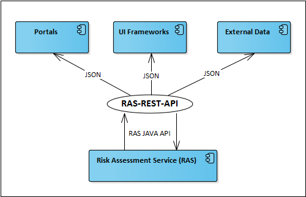

Overview
The audience of this document is external developers and external integrators who want to use or take benefit of the RAS-REST-API.
This documentation provides information on how to assess insurance risks with the REST web services provided by RAS-REST-API based on the Risk Assessment Service (RAS).
It is not the intention of this document to give information about the RAS, the knowledge base DSL or knowledge base design in general.
ReFlex RAS-REST-API context
The RAS-REST-API is a ReFlex middle-ware component. The context of the RAS-REST-API is determined through the “Risk Assessment Service” (RAS) where it is the REST Service Interface to the environment systems.
Defined environment systems for the RAS-REST-API are Portals, UI Frameworks, and External Data delivery systems.

General explanations
Risk assessments and rating
The objective of a risk assessment is to determine the “modification in risk” of an interested party in comparison with a standard risk of a selected product or product collection (product with bundled additional products). This is done by building a “risk profile” of the interested party. The risk profile is the base for the calculation of a risk assessment result. Depending on the result a rating is determined based on the classifications defined by rules.
To gain a notion about the divergence from the standard risk so-called “assessment factors” (AF) are used. Assessment factors represent those facts that potentially modify the standard risk (e.g. diseases, vices, hobbies, etc.). To quantify how an assessment factor modifies the risk some questions, represented by the so-called “assessment variables” (AVs), are asked to an interested party about the current situation in respect to the assessment factor and the offered insurance product.
The questionnaire is a dynamic set of questions. Which questions are shown depends on the knowledge base and the user’s answers.
A risk assessment can start with or without external data. External data means that some answers to questions are already available (e.g. captured by the integrating Portal) and are therefore provided (“provided data”) and included in the risk assessment process.
The interchanged JSON documents of the risk assessment contains a section for meta data. This section can contain additional associated data and even non risk related data such as settings for UI rendering or special data for external system processing.
An assessment result is calculated by processing all given answers, regardless of whether the answer has been provided as external data or by the applicant / insured person. This means that there is a round trip cycle of answering questions and getting new questions based on the answered ones and so on. A client (user or system) has to take care to complete this cycle until a final assessment result is determined by RAS and delivered via the RAS-REST-API service.
Scope of RAS
The Risk Assessment Service (RAS) receives assessment data from clients such as the RAS-REST-API, delivers this assessment data to the risk assessment rules engine, and transfers processed data back. The processed data contains intermediate results.
Results may be additional questions that need to be processed by an external system or user. To continue the assessment RAS expects the answers to the new questions together with all former questions and their answers to be sent back with the next service call.
An assessment is finished when all questions are answered and successfully processed and no more new questions exist. In this case RAS delivers the final assessment result.
Scope of RAS-REST-API
The RAS-REST-API is the interface for accessing risks by processing given answers to provided questions. The RAS-REST-API delivers all appropriate external system data input to RAS and returns the processed data back over its resource based services.
Data is exchanged via HTTP as JSON documents.